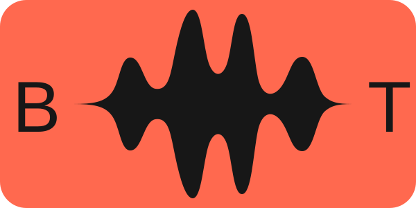

AI Create
Automatic song trim and mashup workflow.
PLANNED
Beyond Music. Into Motion.
A NEW WAY TO FEEL INDIAN MUSIC
From the sounds you grew up with to the next wave of Indian music.
PICK UP WHERE YOU LEFT OFF
WHAT'S MOVING RIGHT NOW
Trending tracks will appear here when the legal music catalogue is connected.
CHOOSE YOUR SOUND
YOUR PERSONAL COLLECTION
Sign in only when you want to save liked songs or create and sync your own playlists.
STAY IN THE FLOW
Artist and singer stations will be available with the connected catalogue.
MAKE SOMETHING YOURS
Automatic song trim and mashup workflow.
PLANNEDTrim tracks and build your own mashup.
PLANNEDISOLATE THE SOUND
Stem availability depends on source licensing and supplied audio rights.
MAKE IT YOURS